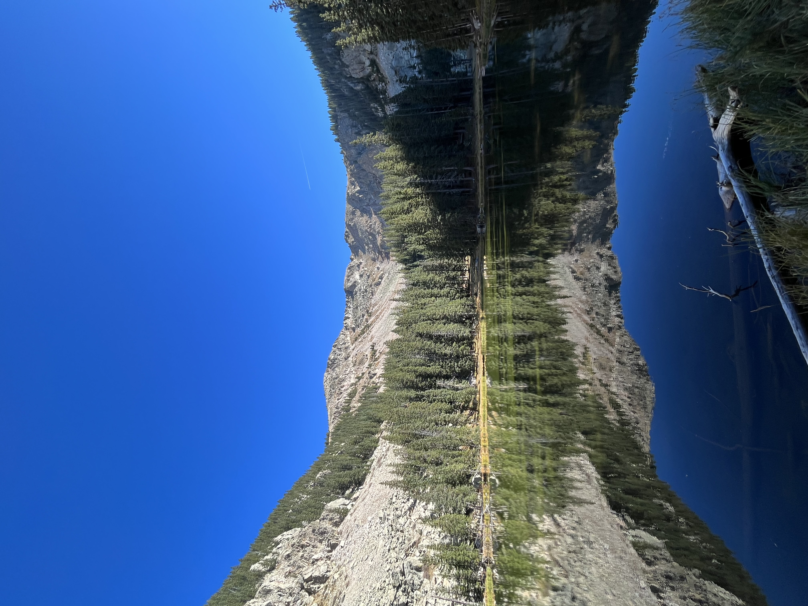

New Mexico’s Lakes & Falls
You may not think of waterfalls and lakes when you think of New Mexico, but I found that the mountain desert has plenty of hidden water gems.
I start hiking more during the last year of my undergraduate at the University of New Mexico. I’m so glad that I picked up the hobby because that final year holds some of my best memories of the beautiful state. I particularly loved seeking out waterfalls and alpine lakes and I document the ones that I got to here.
Waterfalls
Jemez Falls
About one hour north of Albuquerque lies the highest waterfall in the Jemez Mountains! The overlook is easily accessible by a short 1/4 mile hike.
I went here twice, once in the fall and once in the summer. There were a few other hikers but it was not crowded either time. A noticeably stronger current and more wildflowers in the summer!

Nambe Falls
Nambe Falls Dam and Reservoir lies about 3o minutes north of Santa Fe and is managed by the Nambe Pueblo. You need a permit to enter the park which are cash only and available at the entrance.
There are two trails, one is an overlook and the other takes you through the river to the base of the falls. I took the river trail during the fall so the water level wasn’t very high. Would recommend water shoes or at least water proof hiking boots. There are four tiers with two taller falls (100ft and 75ft) and an area at the base where swimming is permitted. A really unique sight to see.

Alpine Lakes
Nambe Lake
With this hike began my love for alpine lakes! The trail begins at the Santa Fe Ski Resort on Windsor Trail for a few miles then you turn onto Nambe Lake trail, which follows the Nambe creek. The trail is difficult to follow at this point and very steep towards the end but trust me, it is SO worth it. The views are absolutely breathtaking. It’s around 7 miles out-and-back and my watch read about 3500ft of elevation gain.

Lost Lake
Lost Lake is located near Red River, a beautiful town in northern NM. The drive to the trailhead takes you through the mountains and is quite stunning. The trail itself was consistently steep but very manageable. It was very well maintained, the views were amazing, and there were a lot of wildflowers during July. The lake is so peaceful with clear water and lush surrounding greenery. It was about 10 miles out-and-back and 2000ft elevation gain.
When I did this, I met a hiking group there and spent the majority of the hike with a very friendly retired man and his pup, Bella. We chatted about many things, including our shared love of math.

Middle Fork Lake
The trailhead to Middle Fork Lake is the same as Lost Lake, but this lake offers very different and very beautiful scenery. The hike is about 5 miles total and 1200ft elevation gain. It’s steep as you near the lake but so worth it. A very peaceful spot and I had a great time exploring. There’s also a cool waterfall along the way.
I did both Lost Lake and Middle Fork Lake in one trip and my total it was 13.33 miles and about 2750 elevation gain. Both are definitely doable in one day go just be prepared with enough water/food.

Trampas Lakes
One of my favorite hikes to date! The trailhead is located in a campground in Carson National Forest, between Santa Fe and Taos. The trail leads along the Rio de las Trampas to three alpine lakes. Such a beautiful hike with a lot of cool rock slides along the way. Tons of wildflowers too! Don’t be surprised if you encounter a herd of cattle, they’re very friendly! It’s about 5.5 miles to Trampas Lakes, which lie surrounded by jagged peaks that make for spectacular views. The definition of tranquility.